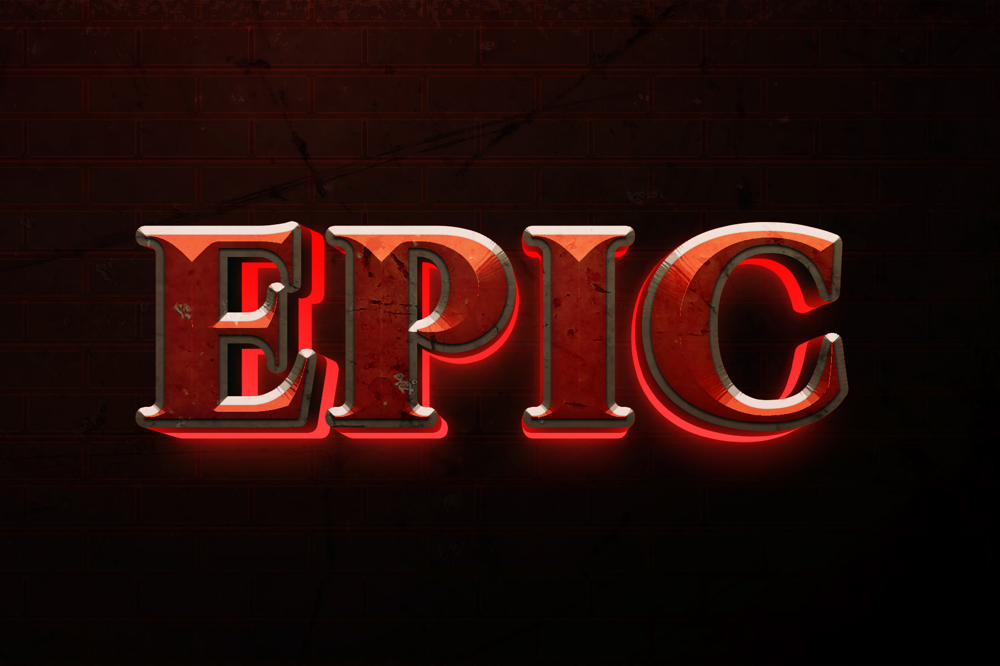
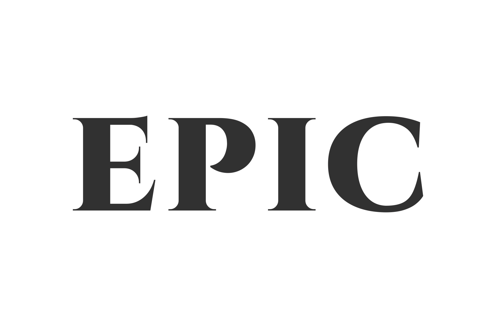
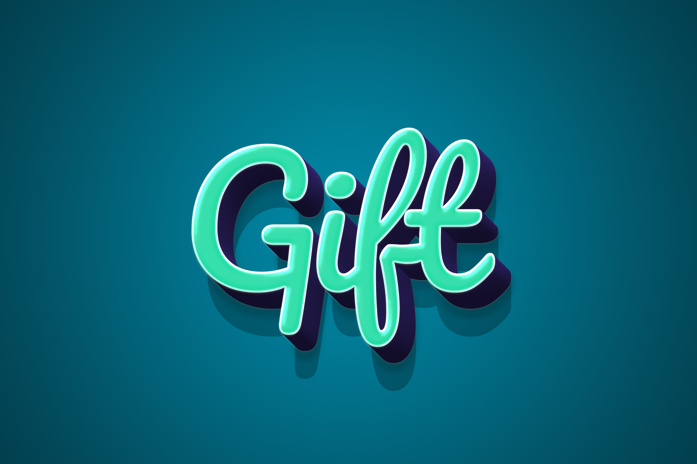
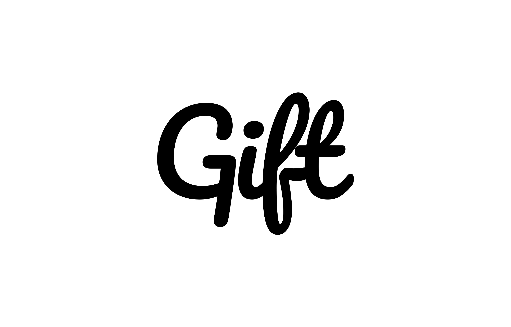
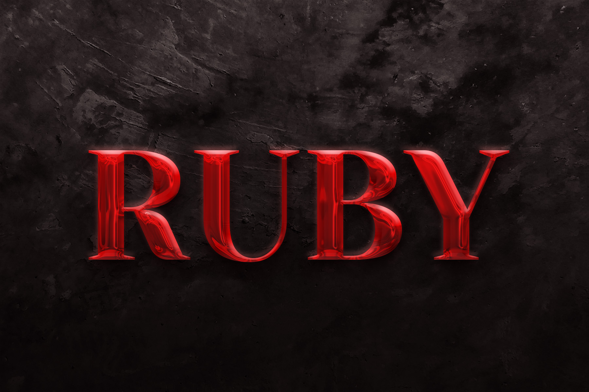
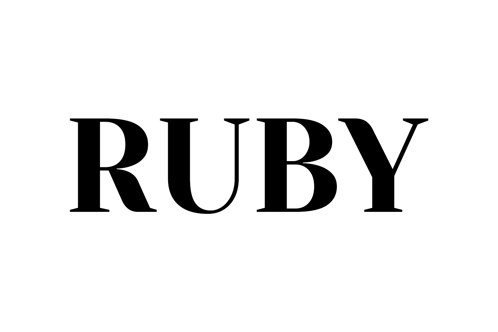
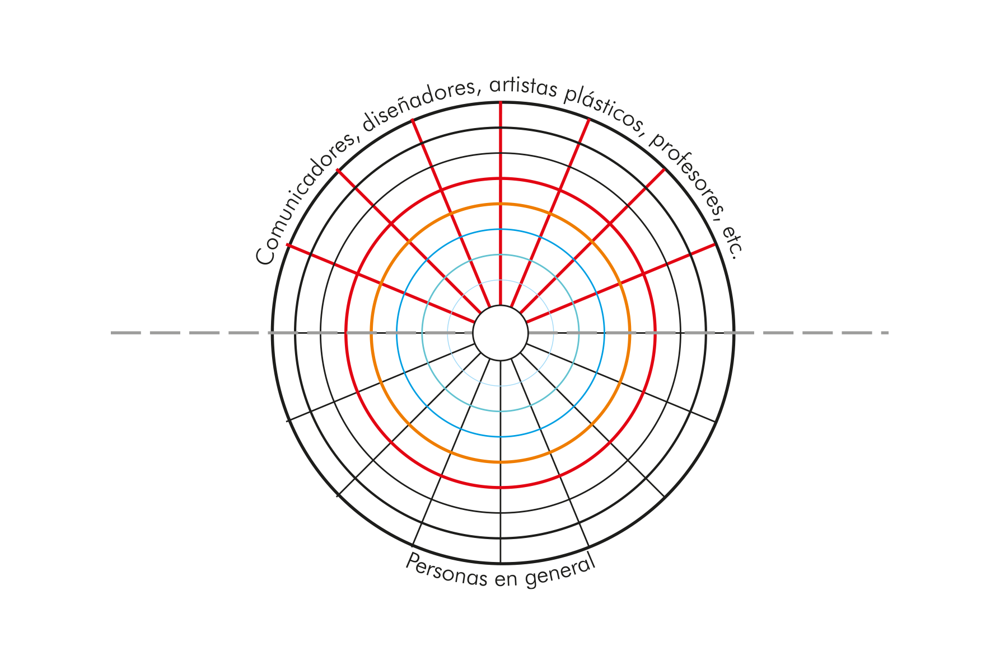
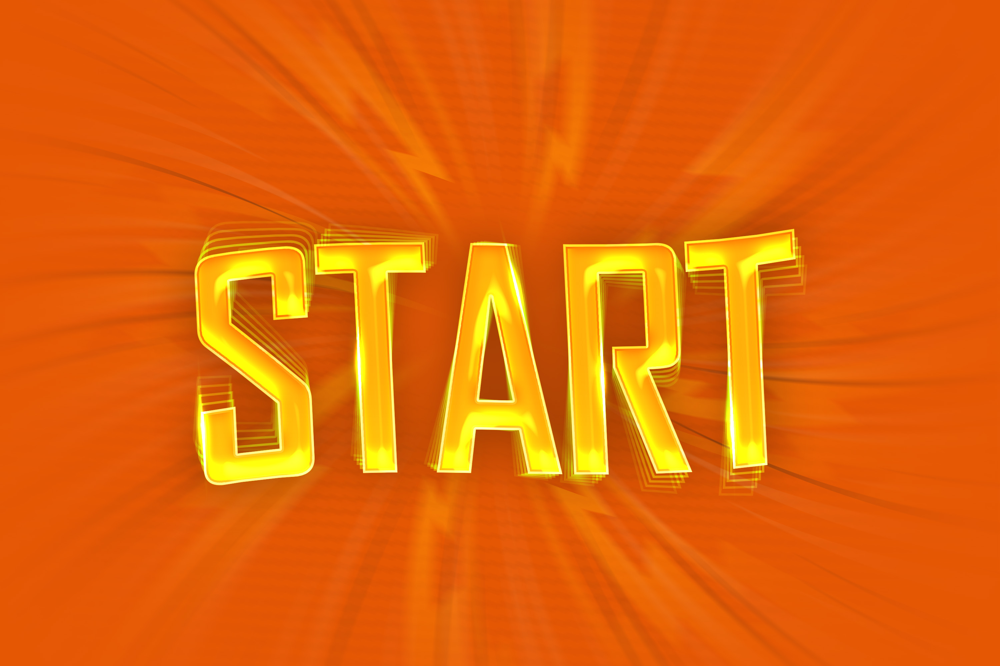
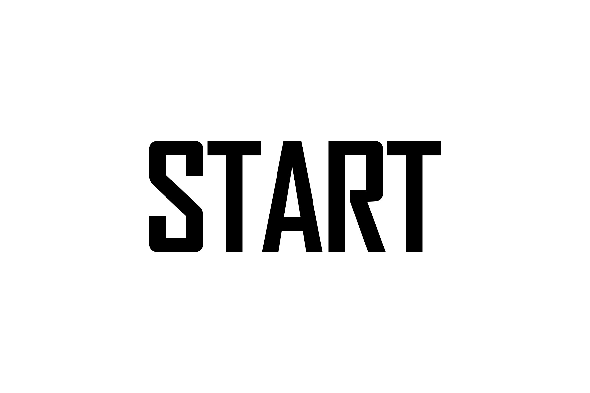

→ Toca los hotspots + (micro), ◉ (profesionales) y ◎ (público) para explorar los atributos
| Eje | Observación en EPIC | Valor connotativo |
|---|---|---|
| Peso | Peso medio-alto a alto, no "black" | Solidez, presencia, autoridad |
| Contraste | Muy alto contraste entre astas gruesas y filetes/remates finos | Elegancia, sofisticación, dramatismo, lujo |
| Modulación | Eje claramente vertical, no caligráfico oblicuo | Orden, control, clasicismo, racionalidad |
| Serif / remate | Serif fino y refinado, terminaciones limpias y precisas | Distinción, tradición culta, tono editorial |
| Proporción | Letras anchas/estables, no condensadas | Seguridad, aplomo, monumentalidad moderada |
| Caja | Composición en mayúsculas | Épica, solemnidad, jerarquía, proclamación |
| Espaciado | Interletrado aireado y equilibrado para display | Prestigio, respiración visual, sensación premium |
| Uso probable | Titular, logotipo o marca; no texto corrido | Identidad fuerte, recordación, impacto |
◈ Constelación de valores connotativos · EPIC
Configuración: alto contraste + mayúsculas + serif moderna + modulación vertical + espaciado cuidado



→ Toca los hotspots + (micro), ◉ (profesionales) y ◎ (público) para explorar los atributos
| Eje | Observación en Gift | Valor connotativo |
|---|---|---|
| Peso | Trazo bold o casi black, con mucho negro visual | Presencia, energía, cercanía enfática |
| Contraste | Bajo a medio-bajo; no hay oposición extrema entre finos y gruesos | Soltura, informalidad, accesibilidad |
| Dirección | Predomina inclinación y flujo cursivo/script | Movimiento, dinamismo, impulso |
| Modulación | Manual y orgánica, no geométrica | Humanidad, gesto, voz personal |
| Serif / sans | Sin serif; lettering script de fantasía | Cercanía, expresividad, identidad propia |
| Proporción | Letras anchas y redondeadas, gran ocupación del ancho | Amabilidad, estabilidad, tono amigable |
| Ligazón | Conexión visual entre caracteres, continuidad de trazo | Fluidez, naturalidad, tono conversacional |
| Uso probable | Logo, rótulo o titular breve; no texto corrido | Recordación, marca emocional, impacto rápido |
◈ Constelación de valores connotativos · Gift
Configuración: peso alto + curva blanda + continuidad de trazo + gesto caligráfico + baja rigidez estructural



→ Toca los hotspots + (micro), ◉ (profesionales) y ◎ (público) para explorar los atributos
| Atributo | Descripción en RUBY | Valor connotativo |
|---|---|---|
| Peso | Black / Bold — astas verticales de máximo grosor | Autoridad sin afecto, peso institucional |
| Contraste | Extremo: relación grueso/fino muy acentuada, típicamente didona | Elegancia fría, lujo, sofisticación editorial |
| Eje modulación | Vertical racionalista (0°), sin inclinación caligráfica | Precisión mecánica, glamour monumental |
| Remates | Filiformes horizontales, unión angular con el asta sin empaste | Clasicismo contemporáneo, tensión visual |
| Proporciones | Normal, ni condensada ni extendida | Equilibrio, aplomo, monumentalidad |
| Apertura | Media-baja: contraformas reducidas por el peso negro | Densidad visual, concentración de fuerza |
| Caja | Exclusivamente mayúsculas (display) | Glamour proclamado, distancia noble, lujo |
| Estilo | Romana moderna/didona, cursividad nula | Tradición s. XVIII actualizada, drama controlado |
◈ Constelación de valores connotativos · RUBY
Configuración: black + didona + eje vertical + hairline serifs + todo mayúsculas



→ Toca los hotspots + (micro), ◉ (profesionales) y ◎ (público) para explorar los atributos
| Atributo formal | Descripción en START | Valor connotativo activado |
|---|---|---|
| Peso | Black / Extranegra — trazo ocupa casi todo el espacio positivo | Contundencia, presión, urgencia |
| Proporción | Condensada — relación ancho/alto marcadamente estrecha, astas verticales dominantes | Velocidad, impulso ascendente, disparo de salida |
| Modulación | Casi monolineal — bajo contraste entre gruesos y finos | Modernidad industrial, neutralidad técnica |
| Eje | Vertical — sin inclinación caligráfica, modulación estrictamente racional | Racionalidad pura, eficiencia funcional |
| Familia | Sans grotesca — terminales cortados en ángulo diagonal (visible en S) | Dinamismo, corte limpio, ruptura del reposo |
| Caja | Solo mayúsculas (all caps) | Imperatividad, comando, autoridad instantánea |
| Contraformas | Muy cerradas y rectangulares; mínimas en R, A y T | Densidad, tensión, energía concentrada |
◈ Constelación de valores connotativos · START
Configuración: black + condensada + sans grotesca + all caps + terminales angulares
Evaluación Tipográfica
Semana 3 · Constelación de Atributos de Moles · Todos los campos marcados con * son obligatorios